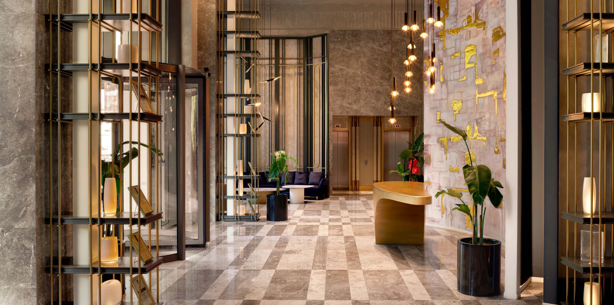

PROJECT OVERVIEW
Nişantaşı Koru
A residential development in Nişantaşı with wide terraces, garden apartment concepts and landscaped grounds. Its setting brings a green residential atmosphere into central Şişli.
Social facilities2,500 m²
Home conceptsGarden and terrace apartments
NeighbourhoodTeşvikiye
Photo gallery

Project photographs from the official project gallery.
EVERYDAY LIVING
Living spaces
The official presentation includes a lounge, children’s play room, fitness centre, indoor pool, Turkish bath, sauna and steam room.
LOCATION AND ACCESS
Teşvikiye · Şişli · Istanbul
Teşvikiye, Şişli, near Ihlamur Kasrı and the shopping, dining and cultural streets of Nişantaşı.
YOUR NEXT STEP
Choose your home
Request the current apartment selection, price and payment options. Compare the exact unit, view and included services before arranging your purchase.